Ihor “Slon” Utyuzh
1996 — 2023
Defender of Ukraine, soldier of the Air Assault Forces, participant of the Revolution of Dignity. A person who carried strength, dignity, and love.
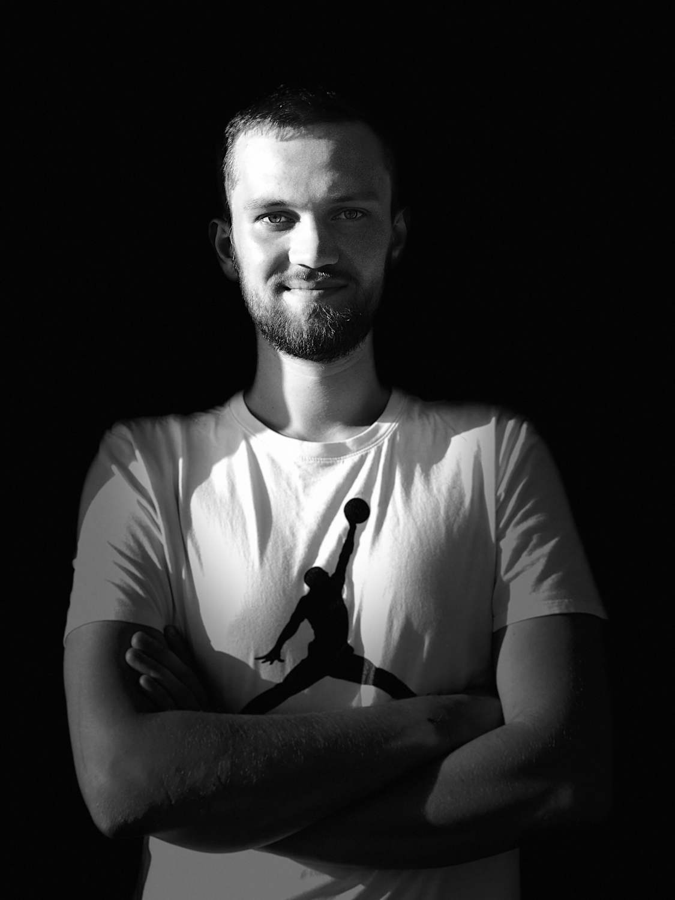
About Ihor
Ihor Utyuzh, callsign “Slon”, was a person of calm strength, loyalty, and deep integrity. He loved life, people around him, his city, and his country.
Before the full-scale invasion, Ihor lived a normal young life: studies, friends, travels, football, chess, jokes, and plans for the future. But when Ukraine faced danger, he made a choice that defined everything — to defend it.
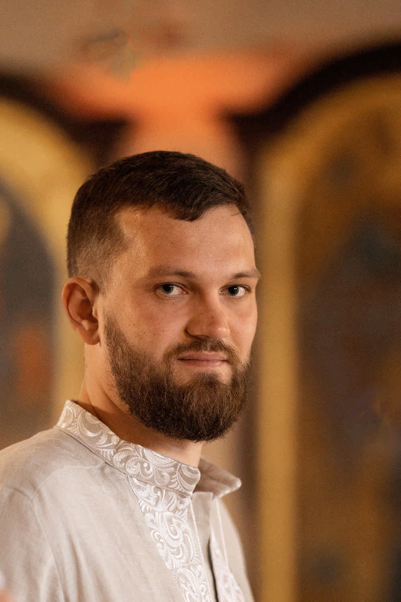
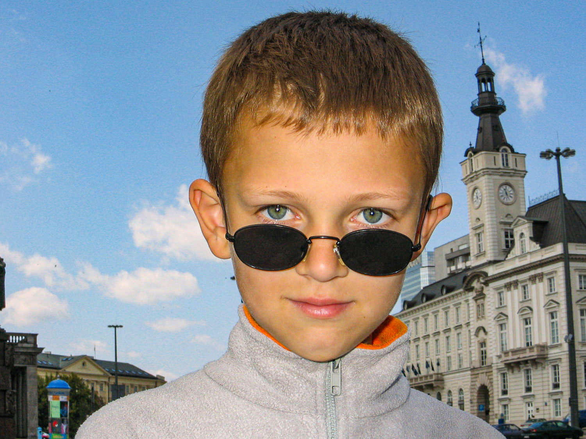
Military Service
With the beginning of the full-scale invasion, Ihor joined the Air Assault Forces of Ukraine. His callsign “Slon” (“Elephant”) reflected his endurance, reliability, and ability to hold the line where others could not.
He served on difficult frontlines, worked with equipment, and carried out missions requiring precision and calmness. Even in the hardest moments, he found strength to support his comrades.
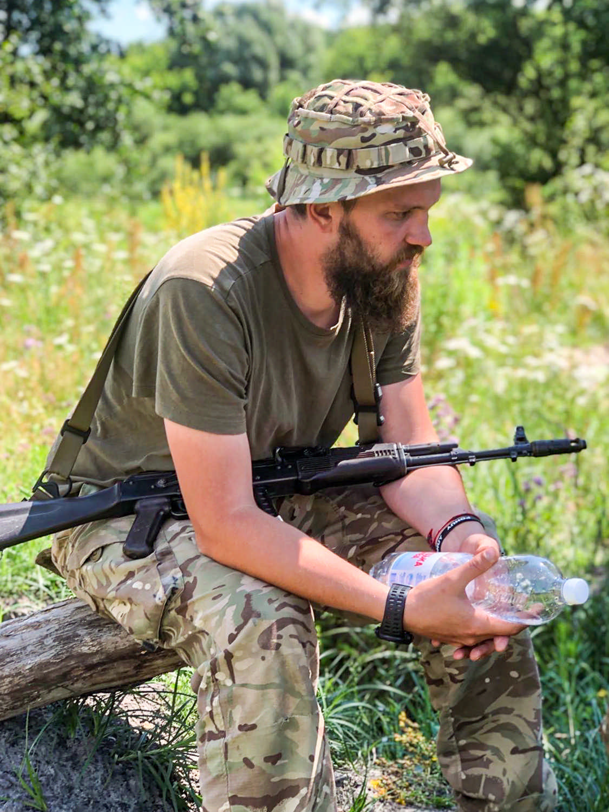
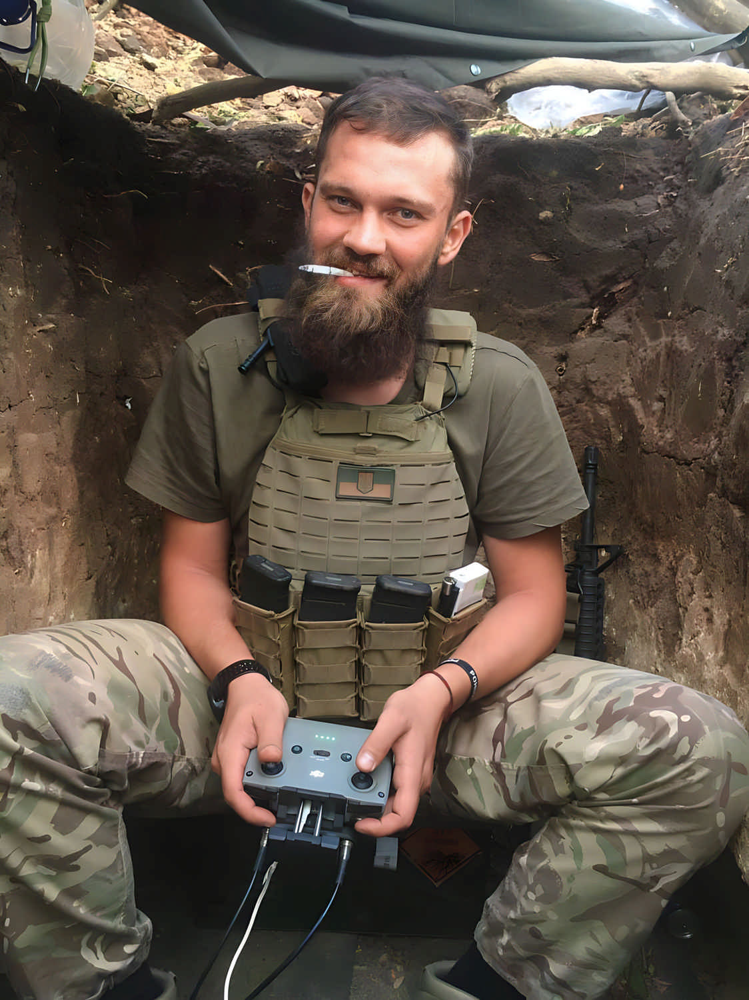

Life Moments
Ihor enjoyed simple things: games, the city, stadiums, moments with friends. These photos are fragments of his story.
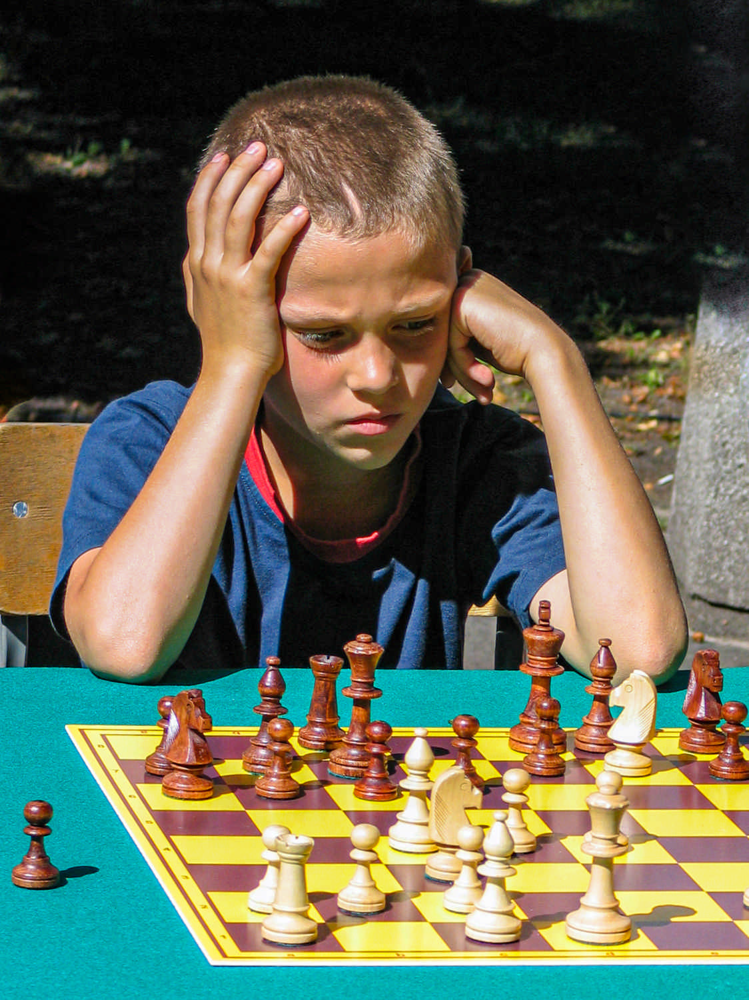
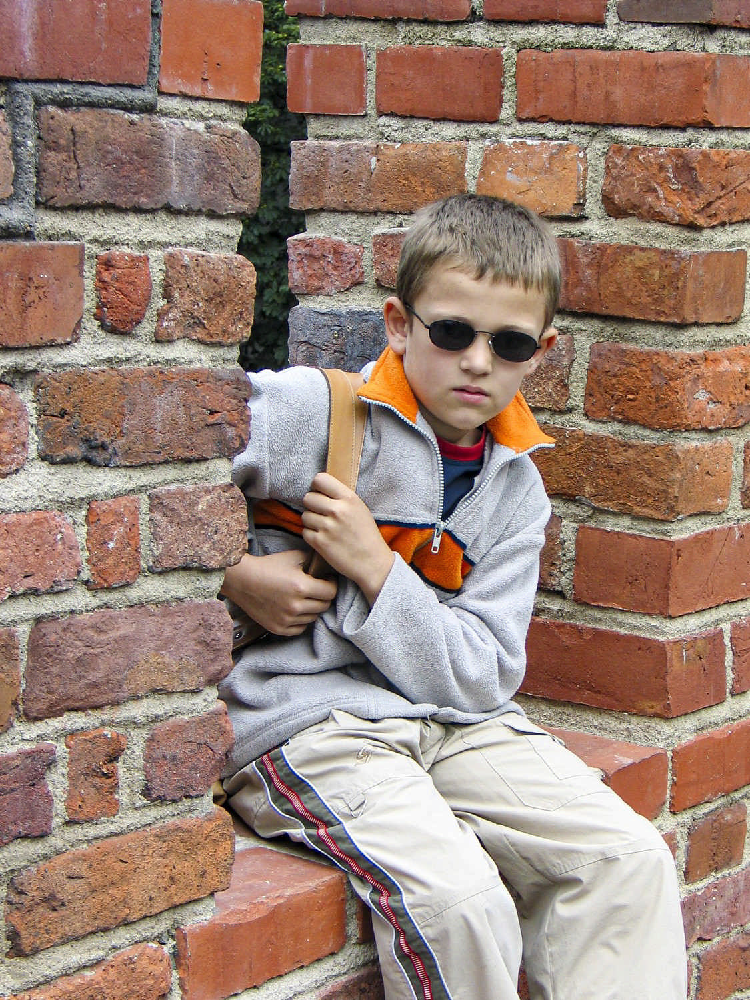
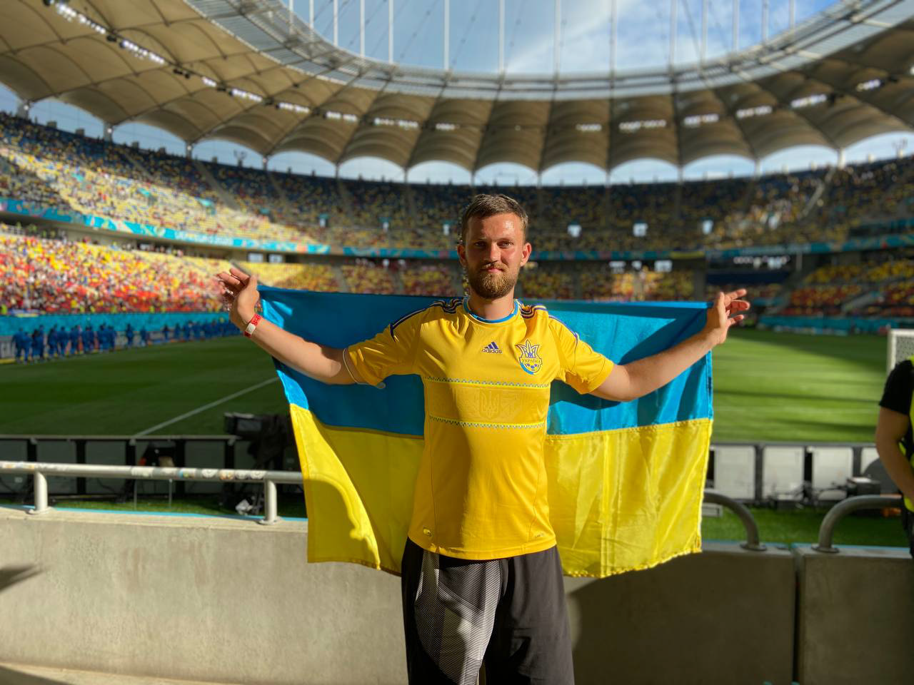
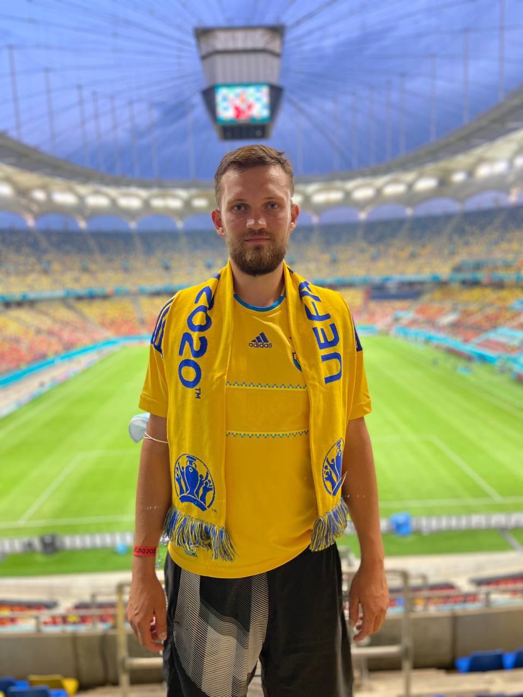
Symbols & Memory
“Slon” is not just a callsign — it is a symbol of strength, endurance, and loyalty. This emblem, the shield, the colors — they continue the story told by those who knew him.
The memory of Ihor lives in his family, comrades, friends, in the city where he grew up, and in the country he defended. This page is one of the ways to honor that memory.
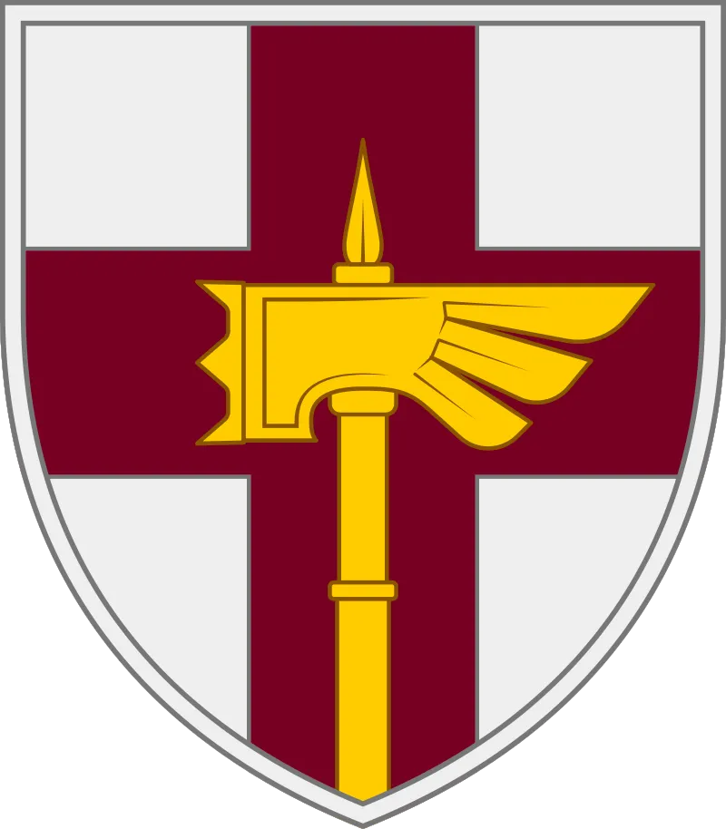
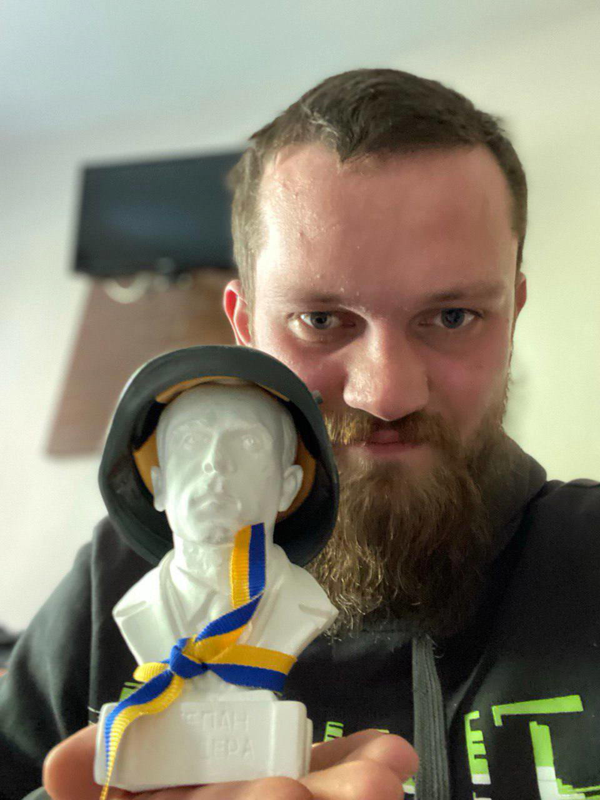